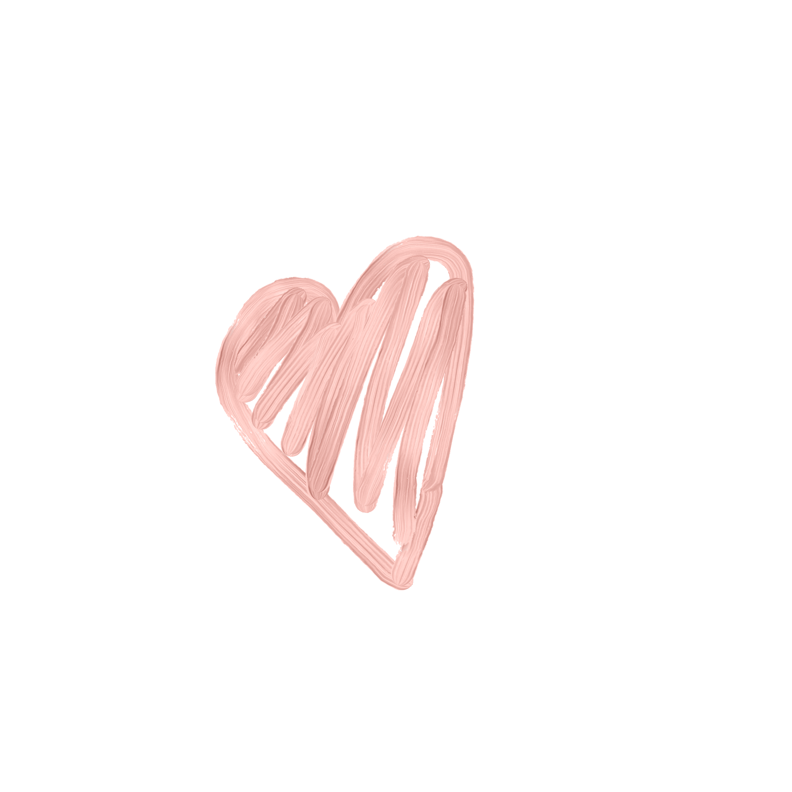
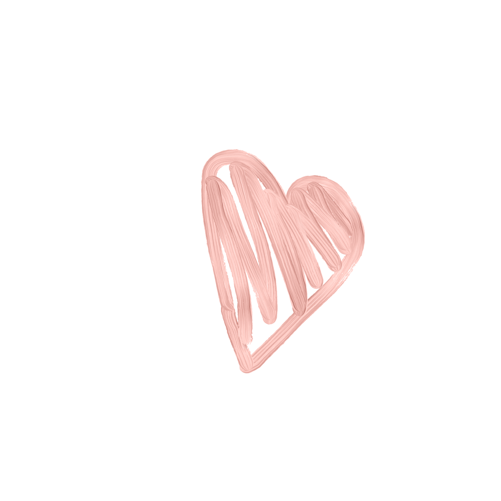

 Пару слов о создателях сайта 
Цой Игорь и
Морозова Александра
Вместе мы трудились над оформлением и смыслом данного сайта. Старались подобрать нужные картинки, расцветку и тому подобное. Самое главное, мы надеемся, что у вас получилось создать главный экран, который вам симпотизирует
Вместе мы трудились над оформлением и смыслом данного сайта. Старались подобрать нужные картинки, расцветку и тому подобное. Самое главное, мы надеемся, что у вас получилось создать главный экран, который вам симпотизирует